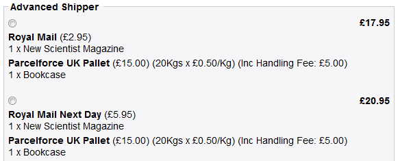
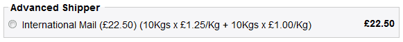
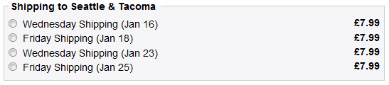

Product / Category / Manufacturer Rates
The Advanced Shipper module allows individual products and/or entire product categories and/or all products from specific manufacturer(s) to have their own specific shipping rates!
There is no limit on the number of methods which can be defined, products/categories/manufacturers/the whole store can have multiple shipping methods if desired (E.g. “Royal Mail 2nd Class”, “Royal Mail Next Day” etc.)!
If there are various shipping options for the items within a customer's shopping cart, they are presented with all possible combinations of shipping methods for those items, so they can choose the method (combination) that best suits them!
For example, if a customer has a magazine in their cart as well as a bookcase, they can be offered the following options, which let them choose between normal or express delivery for the magazine while having the bookcase shipped via a pallet service:

Being able to specify exactly which products/categories/manufacturers use which method(s) makes it very easy indeed to set up almost any type of shipping arrangement, including complex drop-shipping arrangements etc., something most/all other Zen Cart shipping modules can't do.
In fact, very few shopping cart software packages, commercial and/or open source, can match Advanced Shipper's functionality as integrated with Zen Cart, never mind its ease of use!
Flexible Region Definitions
There are multiple mechanisms for defining Shipping Regions, including Geolocation and Country/Postcode Matching - a hugely flexible option which allows you to set up shipping regions quickly and easily by matching against the customer's postcode/zipcode etc.!
With the extra Advanced Shipper Zones module, an additional option, Country/Zone Matching, can be used to match against addresses using Zen Cart Zones. Stores which already have a list of Zones set up for shipping purposes may find this module very handy indeed!
Another expansion module, the Advanced Shipper Localities module, also adds additional options, Country/State Matching and Country/City Matching, which can be used to ensure that customers are only able to use a set list of States/Areas/Cities, thereby restricting shipping to places on that list - very useful for local delivery stores etc.!
Comprehensive Rate Definition Options
Shipping rates are defined based on a combination of the customer's shipping address - the “Shipping Region” it is in - and the details for the applicable products; their total Weight, total Price or the Number of Items of applicable products, or the Total Order Price of all the products for an order (not just the total price of the applicable products for the method!).
If rates have been defined for individual products and/or categories and/or manufacturers, the overall rate will be calculated based on the composition of their shopping cart.
Rates can be entered as flat rates, percentage rates, a joint percentage rate & flat rate, as a block rate, as a series of combination rates or in several other ways...
Percentage Rates allow rates to be set up by weight/price/number of items quickly and easily, without having to enter long lists of limits & rates!
For Example, if a shipping method uses a courier service which charges by the Kg/lb, a £1.25/Kg (or $1.25/lb) charge could be applied with the following rate definition:
<weight>*:125%</weight>
For a 3.00Kg/lb order, this would be calculated as 125% x 3.00 = 3.75.
Block Rates provide for the charging of a set rate per “block” or part of a block of the weight/price/number of items. The weight/price/number of items is divided up according to a “block size”, which is rounded up to the nearest whole number of blocks, and multiplied by the specified rate.
For Example, if a shipping method uses a courier service which charges £1.50 (or $1.50) for each 0.5Kg/lb or part thereof, the following rate definition could be used:
<weight>*:[0.5:1.50]</weight>
For a 1.25Kg/lb order, this would be calculated as 3 x 1.50 = 4.50.
Combination Rates allow orders to be priced using multiple rates at the same time!
For Example, the same bookcase as above could be sent for an International Order by a method which uses a combination rate that charges more per Kg for the first 10Kg than the second:

Minimum/Maximum Rates make setting up rates even simpler by allowing the specification of a minimum or maximum rate to be applied to any rate calculation. For example, it's easy to state that a rate should be based on a percentage of the weight of the applicable products in the cart, but should cost a minimum amount. This works independently of any surcharge which can also be added on!
Nested Tables of Rates - Advanced Shipper even allows multiple calculation methods to be used per individual shipping method! A very powerful option which allows ever more flexible shipping rate rules to be set up. For example:
<price>0-250: <weight>0-10: 2.50, 10-30: 4.50</weight>, 250-*: 0.00</price>
For orders less than £250 in value, shipping for orders weighing 0-10Kg will cost £2.50 and for orders weighing 10-30Kg it will cost £4.50.
For orders over £250, shipping will be free.
UPS Rates Calculator - This can be used to have the module contact UPS for a custom set of shipping quotes for the applicable products. The Source Country and Source Zipcode/Postcode configuration options for each region of each method mean that it is easy to set up drop-shipping using UPS directly from a manufacturer or distribution centre etc., even for individual products/categories/manufacturers!
USPS Rates Calculator - This can be used to have the module contact USPS for a custom set of shipping quotes for the applicable products. The Source Country and Source Zipcode/Postcode configuration options for each region of each method mean that it is easy to set up drop-shipping using USPS directly from a manufacturer or distribution centre etc., even for individual products/categories/manufacturers!
FedEx Rates Calculator - This can be used to have the module contact FedEx for a custom set of shipping quotes for the applicable products. The Source Country and Source Zipcode/Postcode configuration options for each region of each method mean that it is easy to set up drop-shipping using FedEx directly from a manufacturer or distribution centre etc., even for individual products/categories/manufacturers!
Contact Store Message Rates can be used instead of a numerical rate for individual methods, to prevent customers from checking out with the particular item(s) they have in their cart and instead have the module display a message. (For example, a message such as “Please contact the store for a personal shipping arrangement” could be displayed).
This is a very handy option to have for awkward products/categories/manufacturers, or even to place limits on the number of a items a customer can order etc. (E.g. “To order more than 50 units please contact us for a special shipping arrangement”).
Contact Store After Order Message Rates can be used to allow customers to check out with the particular item(s) they have in their cart but also to request that they “Contact the store for a personal shipping arrangement after completing your order” - so no potential sales are lost but the customer is still kept informed!
Individual Rates Per Product - Advanced Shipper can even link to the products database to look up a rate for each applicable product. This allows the store to have specific rates for specific products! Multiple rates per product are supported, so it's possible to assign different rates to different delivery regions. (The individual rates should simply have been entered in a custom field in the products table).
“Ceon have released the aspirin which will eventually cure all Zen Cart developers' headaches - Advanced Shipper.
“Thanks to this module I can now ditch the half hearted solutions I was forced to provide my clients.
“Thank you for saving me time, money and pain.”
Tom Harding,
Web Developer
Multiple Packages Support
If there is a maximum weight of applicable products which can be sent in a single package, and the ability to split the order into multiple packages is available to the store, the weight at which the products will be split into another package can be specified.
Advanced Shipper will automatically work out how to combine the applicable products into the least number of individual packages possible. It will also take into account any packaging weight that must be added on per package!
Packaging Weights
For rates being calculated using the weight of the applicable products, a table of packaging weights to be added on to the weight of the applicable products - before the rate for the weight is calculated - can be specified.
In a similar fashion to the rates themselves, the additional packaging weights can be specified using flat weights, percentage weights, flat & percentage weights, block weights or combination weights!
Surcharges/Discounts
As if all of that wasn't enough, an additional surcharge, or a discount against the calculated shipping rate, can also be specified for each individual shipping method/region!
It is simple to add on charges for insurance (for example, based on the total price of the products), to add on a charge for handling a large order (for example, one having several packages) etc. or to apply a discount to the calculated shipping rate (for example, to reduce the rate returned by UPS/USPS by a certain percentage).
The surcharge/discount can be a simple flat rate, or can use its own, full table of rates, based on the total Price or the Number of Items of the applicable products, the Total Order Price of all products in the order (not just the total price of the applicable products for the method), the Shipping Rate calculated for the method, the total Weight of all the packages calculated for the method (all the applicable products plus the packaging) or the Number of Packages being used to ship the applicable products by this method!
Method Availability Scheduling & Shipping Scheduling
Individual shipping methods can be set to be valid only for certain time periods, or a preferred shipping date (or selection of shipping dates) can be offered to the customer!
For example, a “Saturday Delivery” Method could be configured to be available from Thursdays (at 16:00) until Fridays (at 16:00).
The Shipping Method would then only be available as an option from 4PM on Thursday afternoon until 4PM on Friday afternoon.
An example of offering a selection of shipping dates:

In addition, it is also possible to set a limit on the number of orders which can make use of a particular shipping method within its availability period.
For example, any stores offering delivery services can stop taking orders for Saturday delivery after the 20th order has come in!
Full Tax Support
Each Region can have its own “Tax Class” setting and rates can be entered including or excluding tax, with an independent “Rates Include Tax” setting able to be configured for each Region for a Shipping Method.
Intuitive Admin Configuration Utility
It would be impossible to offer all the options that the Advanced Shipper module does using the standard Zen Cart configuration shipping module procedures so a complete Configuration Utility has been built from the ground up.
The JavaScript-powered Configuration Utility makes it easy to add, configure and delete Shipping Method Configurations, Product/Category/Manufacturer Selections and Region Configurations.
To cut the store's shipping bills, find out more about Advanced Shipper and try out a demo on the website.
 This module has taken over 14 weeks of work, with none of the time taken being paid for by anyone, so if you find it useful, please support us - just click the donate button.
This module has taken over 14 weeks of work, with none of the time taken being paid for by anyone, so if you find it useful, please support us - just click the donate button.